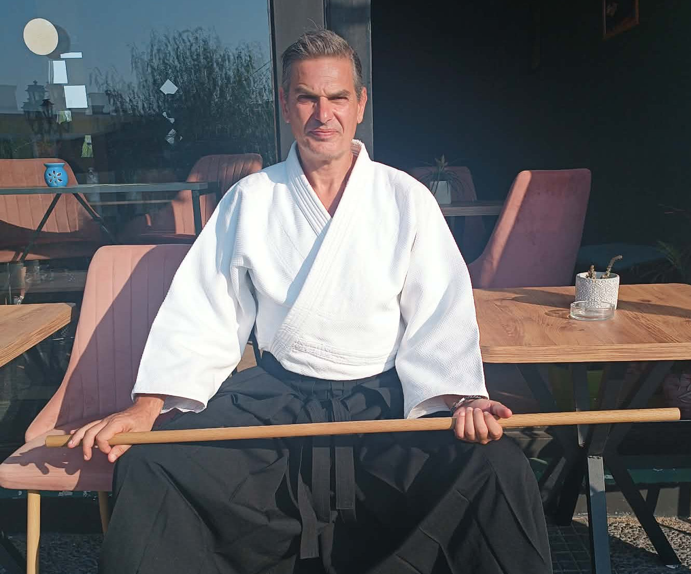

In the summer of 1987, I failed the entrance exams for everything I was trained to believe I was supposed to want. Instead of a predictable path, I was handed a chaotic, terrifying, and deeply rewarding alternative: a scholarship to study electrical engineering in East Germany, just before the world shifted. It was the first of many times life forced me to step into the unknown.
Over the decades, that journey wound through computer science at Humboldt University, intense systemic changes, exhausting intellectual strain, and eventually, a total physical and emotional collapse in 2001. I had to learn to rebuild myself from the raw marrow up. I found my anchors in the somatic discipline of Aikido, the long miles of the Camino de Santiago, and the quiet practice of writing morning pages.
Once, after a long hiatus from the dojo, I stepped onto the mats in Athens wearing a black belt and a 4th Dan, only to realize my body had completely forgotten every single technique. It was a profound gift. It forced me to abandon my history, embrace the total vulnerability of a beginner's mind, and let a deeper core engine take over.
Today, from the quiet shores of Salamis Island, surrounded by the sound of the cicadas, I am starting fresh once again. This space, MyPantopia, is a living testament to stripped-back simplicity, natural flow, and the reminder that we can always choose to wipe the slate clean and begin anew.
← Return Home